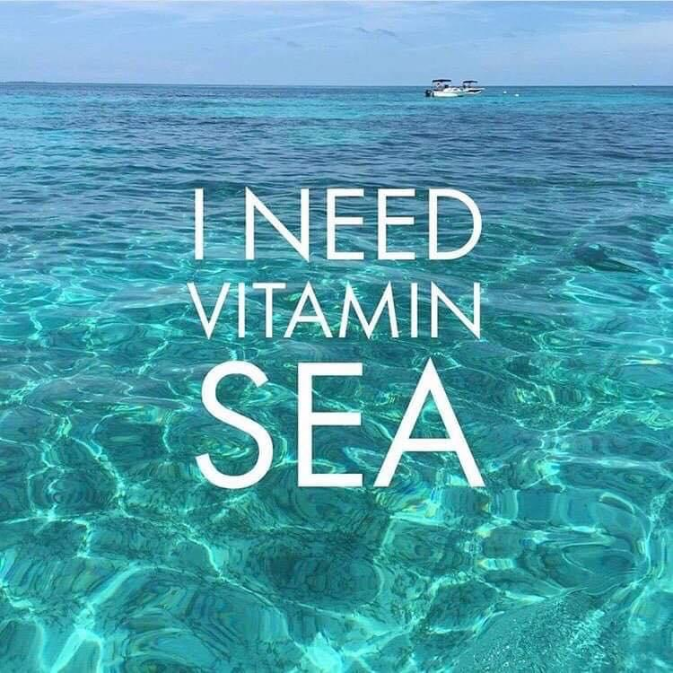

💘 Valentine's from a Nutrition Perspective
February 2023

With 💘 Valentine's Day around the corner… let's talk relationships. I mean real intimate relationships — & what's more intimate than your relationship to food & how you see your body!
What you choose to eat on a daily basis & how you talk to yourself… is it a space that's associated with shame or embarrassment, rejection & unacceptance? Or is it an accepting environment where you can exist fully & comfortably? Feeling your best in your own skin — or in this case your body — regardless of the shape or size it's in.
You're Not Alone
Let's be clear — this is a very common issue many men & women struggle with equally. It could start as early as adolescence & can happen any time later on in life. I'm very well aware that I'm discussing a very sensitive & often private topic.
But what if I told you that you can fix your relationship with food & your perceived body image? Because if you haven't noticed it yet… our eating habits & how we see our bodies has a lot to do with our mindset. And I can promise you that with my help we will work together to reframe that mindset of yours & heal your relationship towards:
- Food and eating
- Dieting and restriction
- How you see your body
- How you see YOU (non-reliant on body shape or size)
- Ultimately, how you take care & nourish yourself
So take some time to think about it… what & how are you feeding both your body & mind? 🧘🏻♀️
A Valentine's Message to Yourself
You owe it to YOU!! to step away from the negative self talk & the self sabotage & go in the direction of fixing your relationship with YOU! Learn to "Love" yourself enough — because when it comes down to it, how you treat yourself sets the tone for any other relationship you will ever have!
This Valentine's Day — and every day after — I want you to commit to a kinder relationship with yourself. One that is built on nourishment, not punishment. On curiosity, not judgment. On progress, not perfection.
If this resonates with you, know that we work on exactly this in our sessions — healing your relationship with food and your body from the inside out, using a nutrition and mindset-based approach that is rooted in science and compassion.